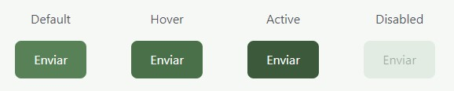
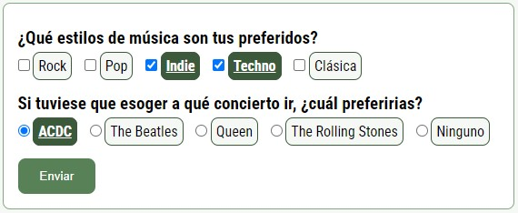
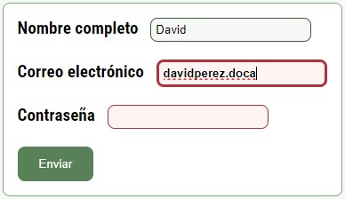
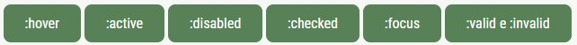
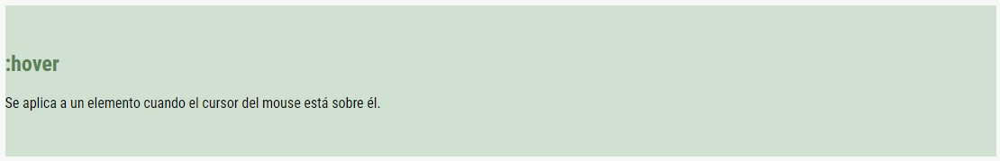

:hover
Se aplica a un elemento cuando el cursor del mouse está sobre él.
:active
Se aplica a un elemento mientras está siendo activado, generalmente al hacer clic en él.
:disabled
Se aplica a elementos de formulario que están deshabilitados, es decir, que no se pueden editar o interactuar.
Ejercicio
Crea dos botones (uno de ellos disabled) y utiliza:
- :hover para cambiar el color de fondo de cada botón cuando el cursor esté sobre ellos.
- :active para cambiar temporalmente el color del botón cuando se hace clic sobre él.
- :disabled para cambiar el estilo de los botones que estén deshabilitados.
Ejemplo de solución
Solución
:checked
Se aplica a elementos de formulario (como checkboxes o radio buttons) que están marcados o seleccionados.
:focus
Se aplican a elementos de formulario mientras está siendo enfocado por el usuario, es decir, cuando un usuario hace clic o selecciona un elemento para interactuar con él.
:valid e :invalid
Se aplican a elementos de formulario que cumplen (o no cumplen) con los requisitos de validación.
Ejercicio
Crea un formulario de registro que incluya los siguientes campos:
- Un apartado donde deje marcar varios estilos de música preferidos: rock, pop, indie, techno, clásica. (obligatorio)
- Otro apartado donde sólo pueda escoger una opción (radio). Siendo el enunciado: "Si tuviese que esoger a qué concierto ir, ¿cuál preferirias?" y las opciones: "ACDC", "The Beatles", "Queen", "The Rolling Stones" o "Ninguno". (obligatorio)
- Botón para enviar el formulario
El formulario tiene que tener un buen uso de las etiquetas (labels) y de los atributos necesarios para después poder manejar la información correctamente (id, name, for, required, checked...).
Además, el formulario debe aplicar estilos para destacar las opciones que son seleccionadas (:checked).
AYUDA: para aplicar estilos y que se vean diferencias cuando la opción está seleccionada o no, los estilos los vamos a aplicar a las labels (porque el input de tipo checkbox y de tipo radio no se puede modificar). Para ello vamos a utilizar input+label{ } y input:checked+label{ } en el CSS de nuestro formulario.
Ejemplo de solución
Solución
Ejercicio
Crea un formulario de registro que incluya los siguientes campos:
- Nombre completo (obligatorio, longitud mínima de 3 caracteres)
- Correo electrónico (obligatorio, formato de correo electrónico válido)
- Contraseña (obligatorio, longitud mínima de 6 caracteres)
- Botón para enviar el formulario
El formulario tiene que tener un buen uso de las etiquetas (labels) y de los atributos necesarios para después poder manejar la información correctamente (id, name, for, required, checked...).
Además, el formulario debe aplicar estilos para cuando se esté interactuando con el elemento (:focus), cuando se rellenen los datos correctamente (:valid) y cuando no (:invalid).
Ejemplo de solución
Solución
:target
Se aplica a un elemento que es el destino actual de un enlace dentro del documento.
Ejercicio
Agregar identificadores únicos a cada elemento 'section' que corresponde a distintas pseudoclases en una página web. Luego, crear enlaces/botones para cada pseudoclase (:hover, :active, :disabled, :checked, :focus, :valid e :invalid). Al hacer clic en cada enlace/botón, el objetivo es desplazarse hasta esa sección específica y resaltarla con un color de fondo único para cada pseudoclase.
Ejemplo de solución
Al pulsar en el enlace/botón de :hover su sección va a cambiar el color de fondo, como por ejemplo:
